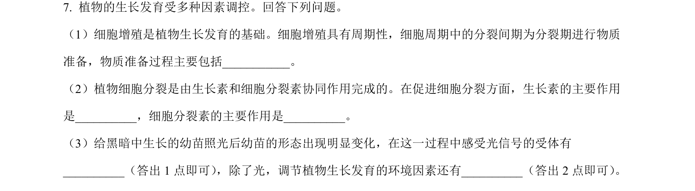
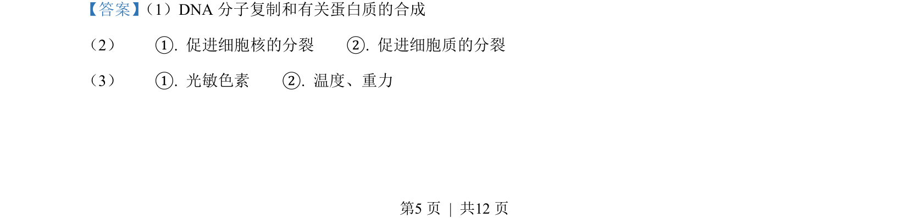
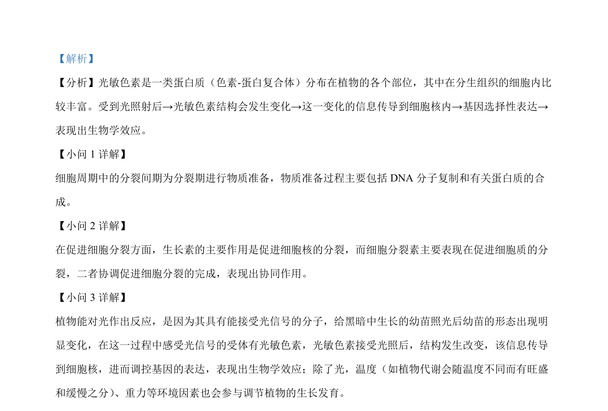

考点：细胞周期 生长素 细胞分裂素 光敏色素
细胞周期
生长素
细胞分裂素
光敏色素

本题考查细胞周期中各时期的物质变化及植物激素和环境因素对植物生长发育的调节。


📄 原 PDF 第 5 页：素材/真题/吉林/2008-2024·（吉林）生物高考真题/2023年高考生物试卷（新课标）（解析卷）.pdf
素材/真题/吉林/2008-2024·（吉林）生物高考真题/2023年高考生物试卷（新课标）（解析卷）.pdf